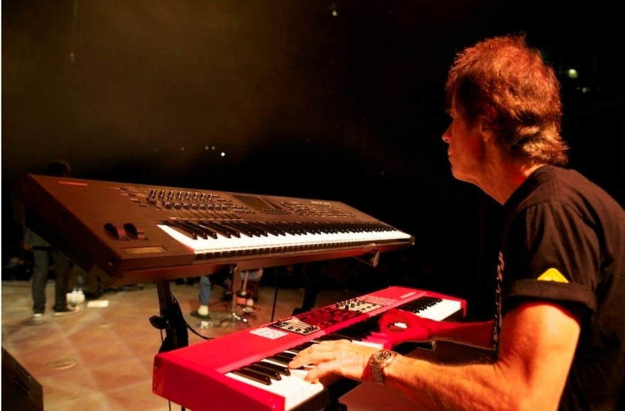
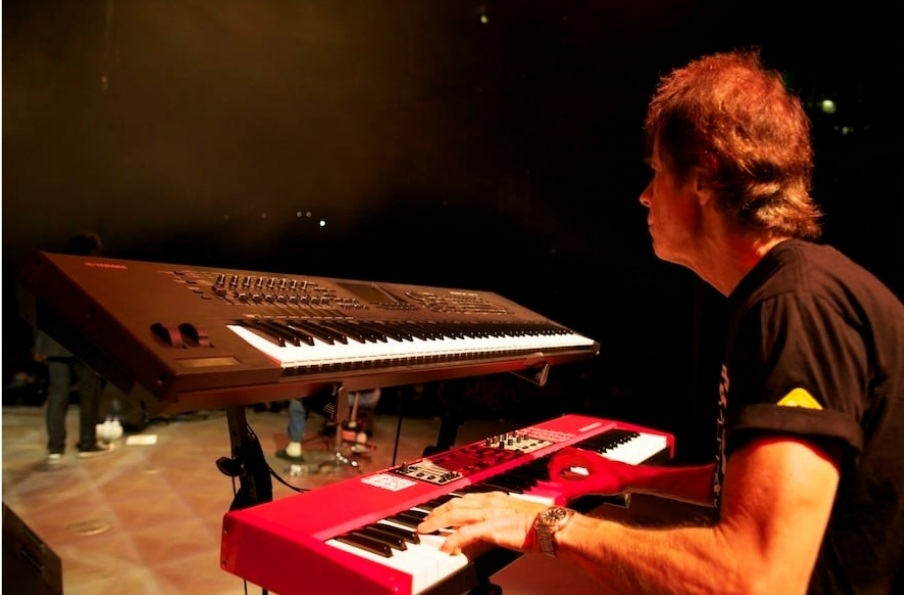

Cicada Project Credits

 


Show It To Me Written by Shandra Beri and Peter Hughes Snell Musicians: Vocals: Shandra Beri Guitars, Keyboards, Programming: Peter Hughes Snell Bass: Armando Compean Drums: Sinclair Lott Basic Tracks recorded at Grandma’s Warehouse by Andrew Bush All Overdubs recorded at TriTone Productions by Peter Hughes Snell Mixed at Windward Alley by John Beverly Jones Mastered at odark30studio by Brad Cobb Produced by Peter Hughes Snell ________________________________________________________________ She Does It All For Jesus Written by Shandra Beri and Peter Hughes Snell Musicians: Vocals: Lead and Background: Shandra Beri Guitar, Keyboards, Bass, Programming: Peter Hughes Snell Drums: Sinclair Lott Drums recorded at Grandma’s Warehouse by Andrew Bush All Overdubs recorded at TriTone Productions by Peter Hughes Snell Mixed at TriTone Productions by Peter Hughes Snell and Shandra Beri Mastered at odark30studio by Brad Cobb Produced by Peter Hughes Snell ________________________________________________________________ I Worship You Written by Shandra Beri and Peter Hughes Snell Musicians: Vocals: Lead and Background: Shandra Beri Guitars, Keyboards, Bass, Finger Snaps, and Programming: Peter Hughes Snell Drums: Sinclair Lott Basic Tracks recorded at Grandma’s Warehouse by Andrew Bush All Overdubs recorded at TriTone Productions by Peter Hughes Snell Mixed at TriTone Productions by Peter Hughes Snell and Shandra Beri Mastered at odark30studio by Brad Cobb Produced by Peter Hughes Snell ________________________________________________________________ I Feel Beautiful Written by Shandra Beri and Peter Hughes Snell Musicians: Vocals: Shandra Beri Guitars, Accordion, B-3, Baritone: Peter Hughes Snell Bass: Armando Compean Drums: Sinclair Lott Basic Tracks recorded at Grandma’s Warehouse By Andrew Bush All Overdubs recorded at TriTone Productions by Peter Hughes Snell Mixed at Windward Alley by John Beverly Jones Mastered at odark30studio by Brad Cobb Produced by Peter Hughes Snell ________________________________________________________________ Don’t You Know Written by Shandra Beri and Peter Hughes Snell Musicians: Vocals: Lead and Background: Shandra Beri Guitars, B-3, Percussion: Peter Hughes Snell Bass: Armando Compean and Peter Hughes Snell Drums: Sinclair Lott Basic Tracks recorded at Grandma’s Warehouse By Andrew Bush All Overdubs recorded at TriTone Productions by Peter Hughes Snell Mixed at TriTone Productions by Peter Hughes Snell and Shandra Beri Mastered at o’dark 30 studios by Brad Cobb Produced by Peter Hughes Snell ________________________________________________________________ Desire Written by Shandra Beri and Peter Hughes Snell Musicians: Vocals: Shandra Beri Piano: Tom Canning Guitars and Strings: Peter Hughes Snell Upright Bass: Armando Compean Drums: Sinclair Lott Basic Tracks recorded at Grandma’s Warehouse By Andrew Bush All Overdubs recorded at TriTone Productions by Peter Hughes Snell Mixed at TriTone Productions by Peter Hughes Snell and Shandra Beri Mastered at odark30studio by Brad Cobb Produced by Peter Hughes Snell ________________________________________________________________ Girl Like Her Written by Shandra Beri and Peter Hughes Snell Musicians: Vocals: Lead and Background: Shandra Beri Guitars: Peter Hughes Snell Piano: Tom Canning Upright Bass: Armando Compean Drums: Sinclair Lott Trumpet: Mitch Manker Basic Tracks recorded at Grandma’s Warehouse By Andrew Bush All Overdubs recorded at TriTone Productions by Peter Hughes Snell Mixed at Windward Alley by John Beverly Jones Mastered at o’dark thirty studios by Brad Cobb Produced and arranged by Peter Hughes Snell ________________________________________________________________ Hey You Written by Shandra Beri and Peter Hughes Snell Musicians: Vocals: Lead and Background: Shandra Beri Guitars, Keyboards, and Classical Guitar: Peter Hughes Snell Bass: Armando Compean Drums: Sinclair Lott Trumpet: Mitch Manker Basic Tracks recorded at Grandma’s Warehouse By Andrew Bush All overdubs recorded at TriTone Productions by Peter Hughes Snell Mixed at Windward Alley by John Beverly Jones Mastered at odark30studio by Brad Cobb Produced and by Peter Hughes Snell ________________________________________________________________ So Hard Written by Shandra Beri and Peter Hughes Snell Musicians: Vocals: Shandra Beri Guitars, Baritone, Keyboards, Beat Box: Peter Hughes Snell Valve Trombone: Mitch Manker Recorded at TriTone Productions by Peter Hughes Snell Mixed at TriTone Productions by Peter Hughes Snell and Shandra Beri Mastered at odark30studio by Brad Cobb Produced by Peter Hughes Snell ________________________________________________________________ Sun and Rain Written by Shandra Beri and Peter Hughes Snell Musicians: Vocals: Shandra Beri Guitars and Mandolin: Peter Hughes Snell Bass: Armando Compean Drums: Sinclair Lott Basic Tracks recorded at Grandma’s Warehouse By Andrew Bush All Overdubs recorded at TriTone Productions by Peter Hughes Snell Mixed at Windward Alley by John Beverly Jones Mastered at odark30studio by Brad Cobb Produced by Peter Hughes Snell ________________________________________________________________ Even If Written by Shandra Beri and Peter Hughes Snell Musicians: Vocals: Lead and Background: Shandra Beri Guitars, Bass, Clock Ticking, and Programming: Peter Hughes Snell Recorded at TriTone Productions by Peter Hughes Snell Mixed at TriTone Productions by Peter Hughes Snell and Shandra Beri Mastered at odark30studio by Brad Cobb Produced by Peter Hughes Snell ________________________________________________________________ Diamond Time Written by Shandra Beri and Peter Hughes Snell Musicians: Vocals: Lead and Background: Shandra Beri Guitars, Bass, Snare Drum: Peter Hughes Snell Valve Trombone: Mitch Manker Recorded at TriTone Productions by Peter Hughes Snell Mixed at TriTone Productions by Peter Hughes Snell and Shandra Beri Mastered at odark30studio by Brad Cobb Produced by Peter Hughes Snell ________________________________________________________________ Queen Written by Shandra Beri and Peter Hughes Snell Musicians: Vocals: Shandra Beri Piano: Tom Canning Upright Bass: Armando Compean Ribbecke Acoustic Archtop: Peter Hughes Snell Trumpet: Mitch Manker Horn Arrangement: Peter Hughes Snell Overdubs recorded at Tritone Productions by Peter Hughes Snell Basic Tracks and Piano recorded at Grandma’s Warehouse By Andrew Bush Mixed at Windward Alley by John Beverly Jones Mastered at odark30studio by Brad Cobb Produced by Peter Hughes Snell ______________________________________________________________ Mr. Man Written by Shandra Beri and Peter Hughes Snell Musicians: Vocals: Shandra Beri Guitar, B-3, Keyboards: Peter Hughes Snell Bass: Armando Compean Drums: Sinclair Lott Trumpet: Mitch Manker Horn Arrangement: Peter Hughes Snell Basic Tracks recorded at Grandma’s Warehouse By Andrew Bush All Overdubs recorded at TriTone Productions by Peter Hughes Snell Mixed at Windward Alley by John Beverly Jones Mastered at odark30studio by Brad Cobb Produced by Peter Hughes Snell ________________________________________________________________ I Fell Written by Shandra Beri and Peter Hughes Snell Musicians: Vocals: Shandra Beri Guitar: Peter Hughes Snell Recorded at TriTone Productions by Peter Hughes Snell Mixed at Windward Alley by John Beverly Jones Mastered at odark30studio by Brad Cobb Produced by Peter Hughes Snell